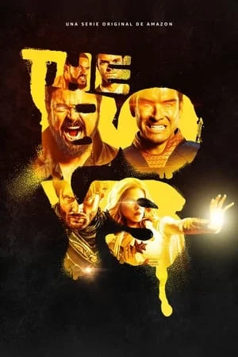
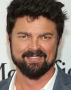
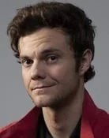
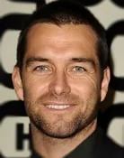
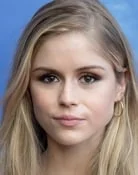
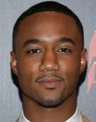
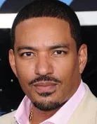

- 
-
Ahora en retransmisión
Ver ahora
Reparto de la serie
- 
Karl Urban
Billy Butcher
- 32 episodios
- 
Jack Quaid
Hugh 'Hughie'
Campbell
- 32 episodios
- 
Antony Starr
John / Homelander
- 32 episodios
- 
Erin Moriarty
Annie January /
Starlight
- 32 episodios
- 
Jessie T. Usher
Reggie Franklin / A-
Train
- 32 episodios
- 
Laz Alonso
Marvin T. 'Mother's
Milk' Milk / M.M.
- 32 episodios